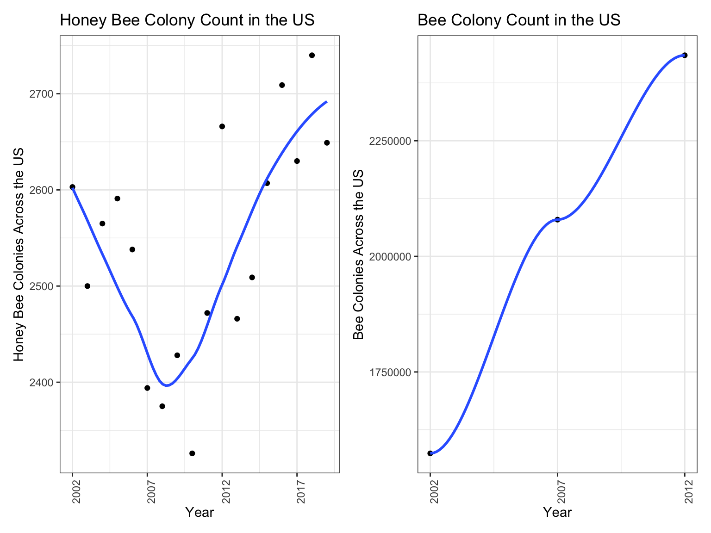
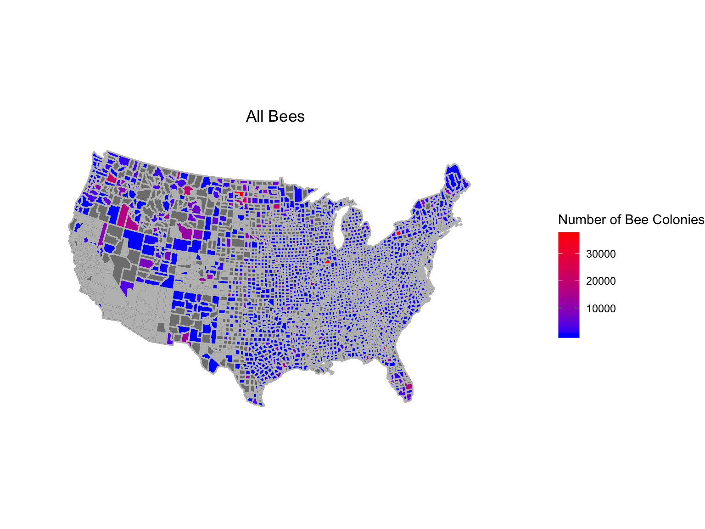
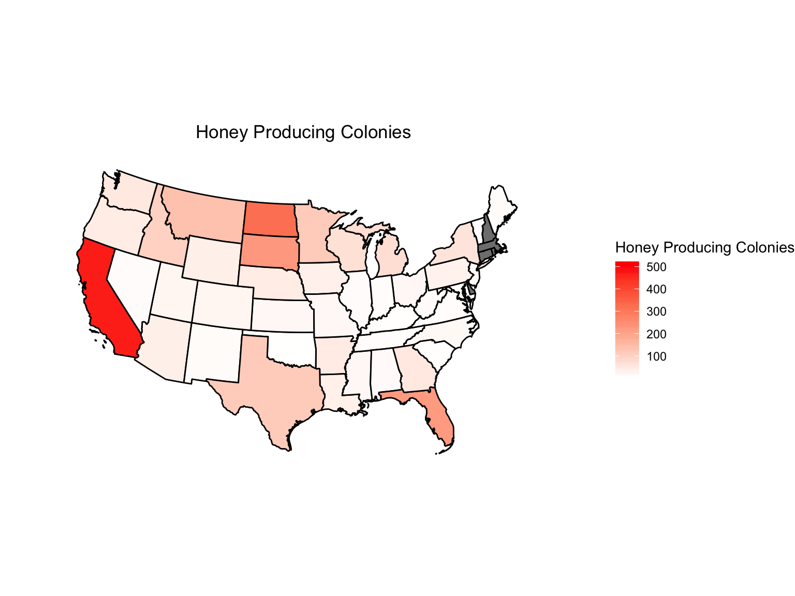

Exploratory Analysis
The goal of this first analysis was to identify time-dependent trends and regional changes in pesticide use and bee populations in the United States since the early 2000’s.
Temporal Analysis
The graph below shows the variations in use of the six most common pesticides in the United States from 2004 to 2016. Two of these compounds, Chlorpyfiros and Chlorothalonil, appear to be used to a much greater extent than the others. These two compounds are known to be insecticides that can potentially lead to nervous function loss in bees, as well as bee population loss.

Figure1: Pesticide Use in the US by Year
 Figure 2: Map of All Bee Population Across the US

Figure 3: Change in Bee Population Across the US
Spatial Analysis
Figure 6: Honey Producing Colonies across the US

Figure 7: Pesticide Use across the US
Correlation
Table 1: Pearson Correlation Coefficients for mean persticide use across states
| CHLOROTHALONIL | CHLORPYRIFOS | CLOTHIANIDIN | FIPRONIL | IMIDACLOPRID | THIACLOPRID | |
|---|---|---|---|---|---|---|
| CHLOROTHALONIL | 1.0000000 | 0.7024675 | 0.3117681 | -0.1226238 | 0.6541162 | 0.1766534 |
| CHLORPYRIFOS | 0.7024675 | 1.0000000 | 0.5756553 | 0.0013495 | 0.9749727 | 0.1236703 |
| CLOTHIANIDIN | 0.3117681 | 0.5756553 | 1.0000000 | 0.5068899 | 0.5498456 | -0.1679516 |
| FIPRONIL | -0.1226238 | 0.0013495 | 0.5068899 | 1.0000000 | -0.0038862 | -0.0562471 |
| IMIDACLOPRID | 0.6541162 | 0.9749727 | 0.5498456 | -0.0038862 | 1.0000000 | -0.0020738 |
| THIACLOPRID | 0.1766534 | 0.1236703 | -0.1679516 | -0.0562471 | -0.0020738 | 1.0000000 |
This table indicates that Chlorothalonil and Chlorpyrifos are highly correlated. Further, Imidacloprid is highly correlated with these two compounds.